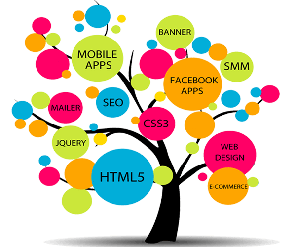

Firstly, Web developers develop and maintain websites and web applications. Even their work usually focuses solely on the underlying software and databases (known as the 'back end'), some web developers work on the interface and visual design (the 'front end'), while others combine both ('full-stack development').
Click onto the image below to be directed straight to a YouTube video which covers the career as a web developer
"